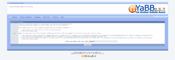

Upgrading from YaBB 1.x
This section only applies to those converting YaBB 1.x data from an existing old forum to the new YaBB 2 data format.
First you will need to install a completely new version of YaBB 2.5.2!
Running the Converter
- Before doing anything - in your YaBB 1 Gold forum, go to your Admin Center and run the forum maintenance utilities to make sure everything is up to date.
- If your YaBB 1 Gold - SP 1.x forum is located on the same server as your YaBB 2.5.2 installation:
- Insert the path to your YaBB 1 Gold - SP 1.x forum in the input field on the Converters start page - and go to point 4.
Else if your YaBB 1 Gold - SP 1.x forum is located on a different server than your YaBB 2.5.2 installation or if you don't know the path to your SP 1.x forum:- You must upload the /Convert/Boards, /Convert/Members, /Convert/Messages and /Convert/Variables folders from the YaBB 2.5.2 zip package and CHMOD them 755.
- drwxr-xr-x (CHMOD 755)cgi-bin/yabb2/Convert
- drwxr-xr-x (CHMOD 755)cgi-bin/yabb2/Convert/Boards
- drwxr-xr-x (CHMOD 755)cgi-bin/yabb2/Convert/Members
- drwxr-xr-x (CHMOD 755)cgi-bin/yabb2/Convert/Messages
- drwxr-xr-x (CHMOD 755)cgi-bin/yabb2/Convert/Variables
- Copy all files from /Boards, /Members, and /Messages from your OLD YaBB 1.x forum to the corresponding /Convert folders in your NEW YaBB 2.5.2 installation. You must then copy Variables/cat.txt, Variables/attachments.txt, Variables/membergroups.txt, and (if it exists) Variables/MemberStats.txt from your OLD YaBB 1.x forum to the /Convert/Variables folder of the NEW YaBB 2.5.2. installation.
- Point your browser to 'http://www.mysite.com/forum/Setup.pl' again to start the Converter. (Revise the URL as needed.)
- The Converter will show the steps required to proceed. Make sure you have a backup of your existing YaBB 1.x data in a safe place!
- You can now follow the on-screen instructions provided by the Converter. It will step you through its 5 steps by having you click the next step's link when it is time.
- After converting you should be ready to login and test your new forum. Load YaBB.pl as shown in the previous setup stages (e.x. http://www.example.com/cgi-bin/yabb2/YaBB.pl). Again, modify this URL to fit your specific website and YaBB installation location.
- Once you are satisfied that your YaBB 1.x forum has properly been converted, use your FTP client to delete 'cgi-bin/yabb2/Setup.pl,' 'cgi-bin/yabb2/Variables/setup.lock' if it exists, and 'cgi-bin/yabb2/Variables/converter.lock'. This will prevent anyone from tampering with your forum using the Setup Utility.
- YaBB 2.5.2 has many new features and settings so be sure to go over each section of the Admin Center and customize the settings to your forum - also make sure to turn on the anti-spam features and create custom questions in Anti-spam Question.